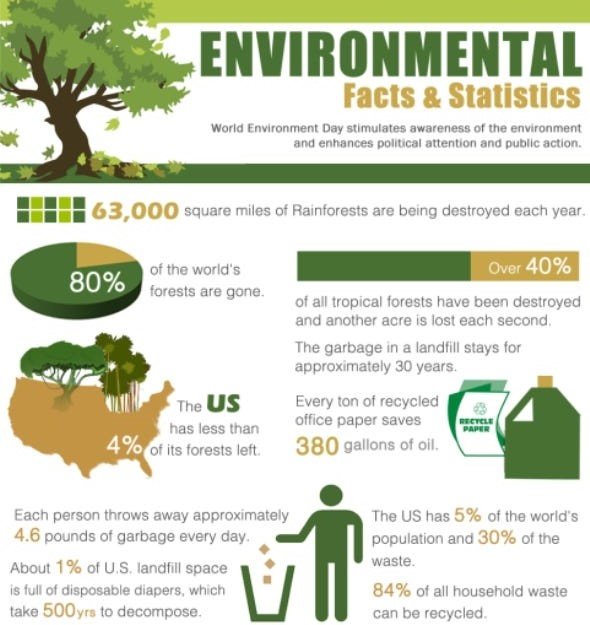

Hello...
Hello! My name is Sithmi Apsara, and I am currently a university student studying Department of Statistic and Computer Science in University of Kelaniya. I love the way statistics allows us to make sense of complex data and uncover insights that can drive meaningful decisions. I’m fascinated by how statistical methods can be applied to a variety of fields, from healthcare to finance and social sciences, giving us tools to solve real-world problems. Through my studies, I’ve developed skills in data analysis, probability, and statistical modeling, and I’m excited to deepen my knowledge and make a positive impact through data. I am eager to apply my knowledge in meaningful ways. I enjoy tackling challenges, whether it’s through academic projects, internships, or exploring new ideas in my free time.In addition to my studies, I enjoy painting. I’m always open to connecting with others and learning something new!

Skills & Strengths
- Statistical Analysis
- Data Analysis & Data Visualization
- Critical Thinking and Problem-Solving
Projects
Social Media and Marketing
Sentiment Analysis on Social Media: Collect and analyze data from Twitter or Instagram to understand public sentiment on specific events or topics.
Ad Performance Analysis: Study the impact of ad timing, design, and platform on audience engagement and conversions.
Technologies used: Descriptive Statistics, Regression Analysis, Inferential Statistics
Environmental Statistics
Air Quality and Health Correlations: Analyze air quality data against public health data to see how pollution levels impact health conditions in a region.
Climate Change Trends: Use historical weather data to identify trends in temperature, precipitation, and extreme weather events.

Technologies used: Descriptive Statistics, Correlation Analysis, Analysis of Variance (ANOVA)
Achievements
- Development of Fundamental Theories
Probability Theory: The establishment of probability theory by mathematicians like Blaise Pascal and Pierre de Fermat laid the foundation for statistical analysis.
- Advances in Sampling and Survey Techniques
Random Sampling: The implementation of random sampling methods allowed statisticians to make accurate inferences about large populations based on smaller samples, which transformed fields such as public health, political polling, and social sciences.
Design of Experiments: Fisher’s work on experimental design introduced randomization and control groups, forming the foundation for scientific experiments and randomized controlled trials.